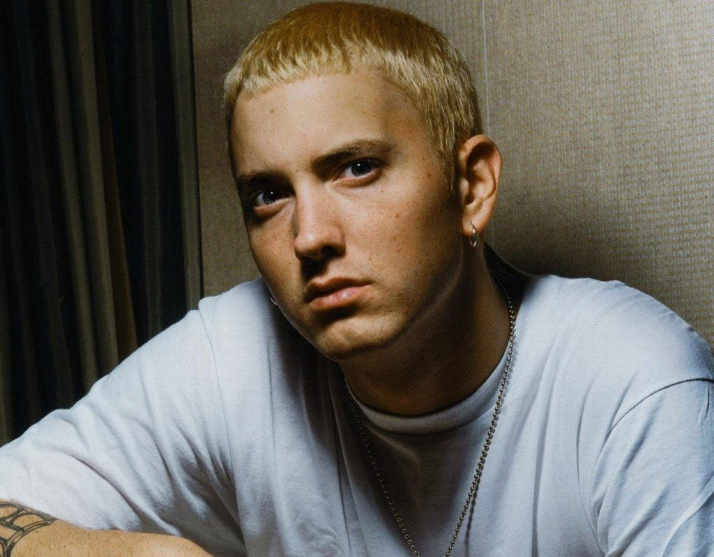

|  | English Name | Eminem | |||||
| Another Name | Marshall Bruce Mathers III | ||||||
| Born | October 17, 1972, St. Joseph, Missouri, U.S. | ||||||
| Nationality | American | ||||||
| Alma master | Lincoln High School in Warren, Michigan. | ||||||
| Occupation | Actor , Singer | ||||||
| Active Year | 1988 | ||||||
| Height | 5'8" | ||||||
| Spouse | Single | ||||||
List of sing
| Year | Title | Composer | Starring | Featuring |
|---|---|---|---|---|
| 2010 | Not Afraid | Eminem | Solo | Solo |
| 2013 | Rap God | Eminem | Solo | Solo |
| 2013 | The Monster | Eminem , Rihanna | Eminem , Rihanna | Eminem , Rihanna |